Предметы интерьера
Реставрация напольных часов
Реставрация напольных часов с маятником, гирями в деревянном корпусе.

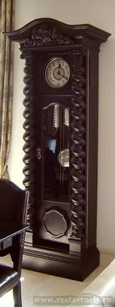
Данные мастерской
| Вид часов | Вост. резьбы | Вост. бронзы | "Под ключ" |
|---|---|---|---|
| Стенные | от 15 000 | от 5 000 | 40 000 |
| Каминные | от 15 000 | от 5 000 | 25 000 - 30 000 |
| Кабинетные | от 15 000 | от 10 000 | 70 000 – 120 000 |
О чём рассказывает мастерская
- Старинные напольные часы
- Часы с гирями и маятником
- Реставрация настенных часов
- Часы каретные, каминные, консольные
- Реставрация старинного корпуса часов
- Купить старинные часы
- Цена антикварных часов
- Ремонт антикварных часов
- Часы с боем. Ремонт
В материале мастерской
Фотографии и детали


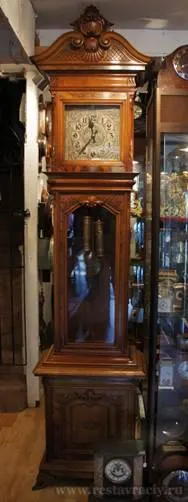
Открыть снимок у мастерской

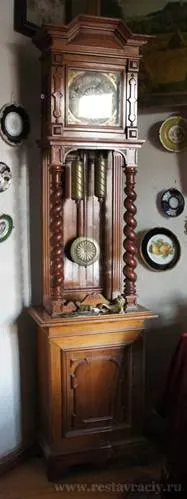
Открыть снимок у мастерской

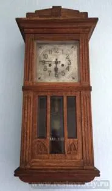
Открыть снимок у мастерской

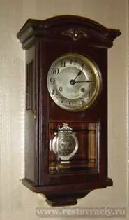
Открыть снимок у мастерской

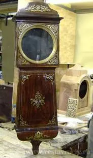
Открыть снимок у мастерской

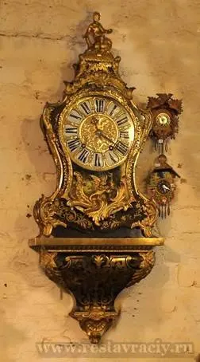
Открыть снимок у мастерской

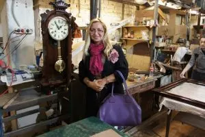
Открыть снимок у мастерской

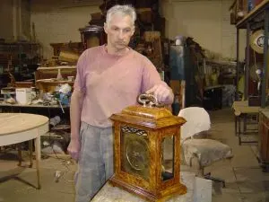
Открыть снимок у мастерской

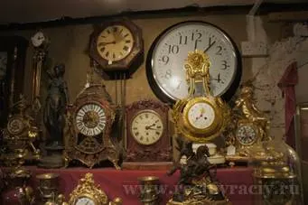
Открыть снимок у мастерской

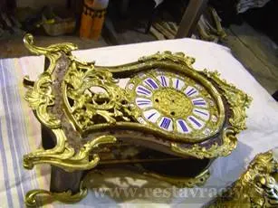
Открыть снимок у мастерской

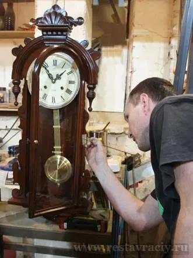
Открыть снимок у мастерской
Есть похожая вещь?
Подберите ракурсы для предварительной оценки.